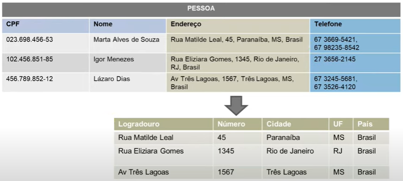
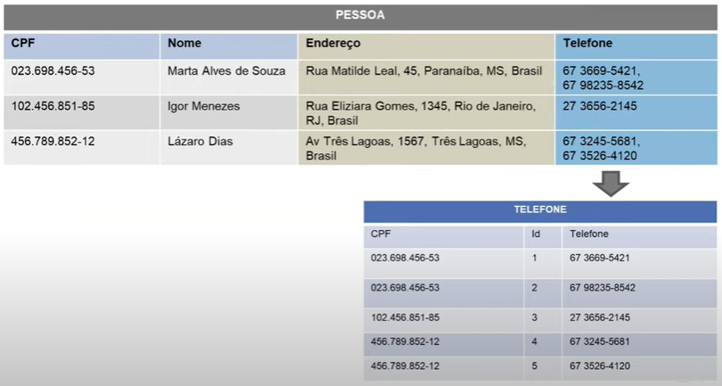
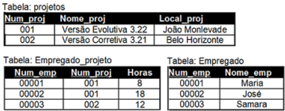
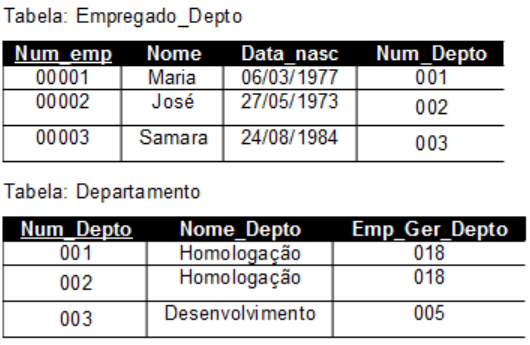

Resumo da Matéria
Introdução
A disciplina de banco de dados estuda conceitos essenciais sobre dados, como como organizar, armazenar e recuperar dados de forma eficaz. Ao longo do curso, abordaremos os princípios dos bancos de dados relacionais, estudando sua estrutura e funções. Também aprenderemos a projetar e manipular dados usando diagramas ER (Entidade-Relacionamento) e comandos como DDL (Descrição de Dados), DML (Desenho de Dados) e DQL (Pergunta de Dados). Além disso, investigamos métodos de normalização até a terceira forma normal, com o objetivo de garantir a eficiência e a integridade dos dados. Este curso fornece uma base sólida para a compreensão e o desenvolvimento de sistemas de banco de dados eficientes e robustos.
PostgreSQL:
O PostgreSQL é um sistema de gerenciamento de banco de dados relacional de código aberto que é amplamente usado em aplicativos de código aberto e empresariais. O PostgreSQL é reconhecido pela confiabilidade, escalabilidade e recursos avançados e suporta uma variedade de funcionalidades, como gatilhos, procedimentos armazenados, replicação, integridade referencial e extensibilidade, além de SQL avançado. O PostgreSQL é uma escolha popular para empresas que buscam uma solução de banco de dados relacional confiável e adaptável devido à sua extensa documentação e comunidade de desenvolvedores ativa.
Dados:
A disciplina de banco de dados concentra-se nos modelos conceitual, lógico e físico de modelagem, bem como na estrutura de dados. O termo "dados" refere-se à coleta, armazenamento e processamento de dados. Em contraste, a modelagem de dados organiza os dados de forma estruturada. A estrutura de dados envolve a organização lógica ou física dos dados, enquanto os modelos conceitual, lógico e físico ilustram as necessidades de informação de uma organização em vários níveis, desde uma perspectiva geral até a aplicação real em um banco de dados. Para garantir a integridade, eficiência e escalabilidade dos dados armazenados, esses conceitos são essenciais no design de sistemas de banco de dados.
Banco de Dados Relacionais:
Modelo Entidade Relacionamento (ER):
O Modelo Entidade Relacionamento (ER) é uma técnica de modelagem de dados que permite a visualização da estrutura lógica de um banco de dados em um gráfico. Ele usa entidades que representam coisas do mundo real e relacionamentos que mostram as conexões entre elas. Atributos descrevem as qualidades das entidades e suas conexões. Os diagramas ER visualizam e estruturam os dados, tornam mais fácil entender os requisitos de informação de um sistema e servem como base para a criação de um banco de dados relacional. Este modelo é essencial para garantir que os dados sejam organizados de maneira eficiente e coerente, refletindo as necessidades do negócio ou da aplicação. Exemplo abaixo:
Comandos DDL - Data Definition Language:
A estrutura dos objetos de banco de dados, como tabelas, índices e esquemas, pode ser definida e controlada por comandos da linguagem de definição de dados, ou DDL. Os comandos CREATE, ALTER, DROP e TRUNCATE, que fazem parte do DDL, dão a você a capacidade de criar novas tabelas, alterar estruturas existentes, excluir tabelas e remover todos os registros de uma tabela sem alterar sua estrutura. Esses comandos são essenciais para a criação e manutenção da estrutura de um banco de dados, que garante que os dados sejam armazenados de forma eficiente e organizada. A seguir está um exemplo de consulta com com comentários explicando o código:
Comandos DML - Data Manipulation Language:
Os comandos de manipulação de dados, também conhecidos como DML, podem ser usados para inserir, atualizar, deletar e consultar dados em um banco de dados. INSERT, UPDATE, DELETE e SELECT são os comandos DML principais. Usando INSERT, você pode adicionar registros adicionais a uma tabela, UPDATE pode alterar dados já existentes, DELETE pode remover registros e SELECT pode recuperar dados do banco de dados. Esses comandos são essenciais para o gerenciamento e manipulação de dados armazenados, pois permitem que os usuários realizem as operações básicas de CRUD (Criar, Ler, Atualizar e Remover) no banco de dados. A seguir está um exemplo de consulta com comentários explicando o código:
Comandos DQL - Data Query Language
Para consultar e recuperar dados em um banco de dados, use os comandos DQL (Data Query Language). O comando SELECT é o principal comando do DQL; permite que você especifique quais colunas e tabelas deseja obter dados, bem como condições e filtros para melhorar os resultados. DQL é essencial para a análise e extração de informações valiosas dos dados, pois permite consultas simples e complexas, como agregações, junções, ordenações e agrupamentos. A seguir está um exemplo de consulta com comentários explicando o código:
Normalização:
Normalização é o processo de organização de dados em um banco de dados. Isso inclui a criação de tabelas e o estabelecimento de relações entre essas tabelas de acordo com as regras projetadas para proteger os dados e tornar o banco de dados mais flexível, eliminando a redundância e a dependência inconsistente.
Primeira Forma Normal - 1FN
Uma tabela está na 1ª FN quando:
Normalização:
Decomposição de Coluna Composta
Correção de atributos multivalorados
Segunda Forma Normal - 2FN:
Uma tabela está na 2ª FN quando:
Normalização:
Terceira Forma Normal - 3FN:
Uma tabela está na 3ª FN quando:
Normalização:
NoSQL:
Introdução:
NoSQL é um tipo de banco de dados que difere dos bancos de dados relacionais comuns (SQL) em como eles organizam os dados para consulta e armazenamento. Os bancos de dados NoSQL usam uma variedade de modelos de dados, incluindo colunas, documentos, grafos e chave-valor, enquanto os bancos de dados relacionais usam tabelas para armazenar dados e consultas SQL para recuperá-los.